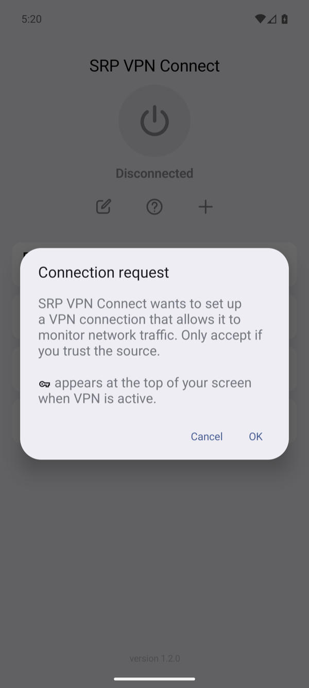

Android
The Android app has the same WaterWall as the iPhone app: the same screens, options, messages and server files. The other guides on this site apply to both. This page lists only what differs on Android, and what we tested there.
The differences were read from the app's source code at commit 0fc837e3. The results are from our tests of that commit on 3 November 2026, against the same production server as the iPhone scenarios.
What is the same
- The WaterWall program. Both apps build the same source folder, the same version as in Versions we tested.
- The chains. The Android app builds the same client chain as the iPhone app for the same choices, so the server files in the guides fit both. To keep it that way, a test feeds both builders the same 37,977 configurations and compares every answer, including which ones are refused and with which message.
- The screens and rules. The UI & Profile Guide describes both: every row, default, message and limit.
- The connection logic. The start-up check, the health check, Auto Reconnect, Retry Times, Auto Switch, Switch to Wi-Fi and On Sleep follow the same rules with the same times, and the messages are the same.
What differs
| Topic | iPhone and iPad | Android |
|---|---|---|
| Installing | TestFlight | A test APK that you build; see Installation |
| System | iOS or iPadOS 15.0 or later | Android 8.0 or later, 64-bit ARM only |
| Protocols | All the app's protocols | WaterWall only so far, so the Protocol screen has one row |
| Permission | iOS asks to add a VPN configuration | Android shows a Connection request once, until the app is removed or another VPN app takes over |
| While connected | The VPN icon in the status bar | The key icon in the status bar. The app does not ask for permission to show notifications, so from Android 13 on it shows none |
| Ping while connected | An HTTPS request to gstatic.com, the answer 204 | An HTTP request through the tunnel to 1.1.1.1 on port 80, any HTTP answer; see How ping is measured |
| Secrets | iOS Keychain | Encrypted with a key held by the Android Keystore. The profile file holds no secret, and profiles stay out of device backups |
| Choosing a file | The Files app | The system's file picker |
| On Sleep | The phone sleeping and waking | The screen going off and coming on |
| IPv6 | The tunnel carries IPv4 only | The same. While the VPN is up, Android gives apps no IPv6 route, so IPv6 traffic does not leave outside the tunnel; a connection to an IPv6 address fails with No route to host |
| The app's log | The app's own lines | The app's own lines and WaterWall's: errors at Normal, more at Expert and Debug. It keeps the last 512 KB when it passes 2 MB |
| Always-on VPN | Not used | Turn it on for the app in Android's VPN settings. Android then starts the app's VPN at once and after every boot, and it connects the profile you used last |
| Many long uploads on a Raw IPv4 chain | — | One or two run at full speed. With more at once, Android's queue in front of the tunnel overflows and they have to send again: in our test one upload of 16 MiB took 4 seconds, and four at once took 46 seconds together. Chains with Connections input do not have this limit |
| After a reconnect | iOS applies the VPN settings again | Android gets a new VPN network, so its DNS cache starts empty and apps see the change, as with any change of network |
The Connection request

What we tested
| Part | Version |
|---|---|
| App | SRP VPN Connect 1.2.0, debug APK of commit 0fc837e3 |
| Phone | Samsung Galaxy A55 (SM-A556E) with Android 17 (API level 37), on our office Wi-Fi and its own cellular connection |
| Emulator | Android Emulator 37.1, Pixel 8 profile, Android 16 (API level 36), arm64, on a Mac. Everything around the connection also ran here, and the screenshots come from here |
| Server | Our production waterwall.service, the same program and files as in the iPhone production scenarios, with its Let's Encrypt certificate and TLS Server Verification on |
| Traffic | A small test app on the phone, inside the VPN, made two downloads and two uploads at once to a speed test server on the server. Each upload's SHA-256 was compared with what the server received, and the server's log showed the requests arriving through the tunnel |
44 of 44 chains and 42 of 42 checks passed.
Every chain of the production server
Each link opens the chain's scenario page, with its server file and the app settings, which are the same on both systems. The times show that traffic moved, and are not a benchmark.
Everything around the connection
Each of these ran on the phone and on the emulator, except the always-on check, which ran on the emulator because the test drives Android's own settings screen. On the phone, the network check moved between its real Wi-Fi and cellular connections and the sleep checks turned its screen off.
| What we checked | Result |
|---|---|
| Nothing listens at the server's port: the start-up check fails and the app says why, with Auto Reconnect off. WaterWall TCP probe failed after fifteen attempts | VERIFIED — TESTED SUCCESSFULLY |
| Retry Times 2 with no server: three tries, then the app gives up with the count in its message. Could not reconnect after 2 attempts. (WaterWall TCP probe failed after fifteen attempts) | VERIFIED — TESTED SUCCESSFULLY |
| The power button while connecting stops it, and the next connect still works. | VERIFIED — TESTED SUCCESSFULLY |
| With Auto Reconnect off, losing the server ends the VPN after the health check. WaterWall TCP health probe failed | VERIFIED — TESTED SUCCESSFULLY |
| With Auto Reconnect on, the app keeps trying while the server is gone and comes back without any tap. | VERIFIED — TESTED SUCCESSFULLY |
| Retry Times counts failures in a row: a good connection in between starts the count again. | VERIFIED — TESTED SUCCESSFULLY |
| The selected profile's port is dead, a sibling with the same Server works: the next attempt uses it. | VERIFIED — TESTED SUCCESSFULLY |
| Wi-Fi off moves the connection to cellular, Wi-Fi on moves it back, and traffic works on both. | VERIFIED — TESTED SUCCESSFULLY |
| With Switch to Wi-Fi off, the app does not act on the change itself. | VERIFIED — TESTED SUCCESSFULLY |
| On Sleep Stay: the screen goes off, the connection stays. | VERIFIED — TESTED SUCCESSFULLY |
| On Sleep Pause: closes at screen off and always reconnects at wake, even with Auto Reconnect off. | VERIFIED — TESTED SUCCESSFULLY |
| On Sleep Off with Auto Reconnect: closes at screen off, reconnects at wake. | VERIFIED — TESTED SUCCESSFULLY |
| On Sleep Off without Auto Reconnect: the VPN ends at wake and says why in the log. | VERIFIED — TESTED SUCCESSFULLY |
| A self-signed certificate for the right name: the check refuses it. With the check off the same handshake finishes. | VERIFIED — TESTED SUCCESSFULLY |
| GeoIP in the profile with no database installed: the app refuses to connect and says what to do. GeoIP is enabled but its database is unavailable: A valid GeoIP country database is required. | VERIFIED — TESTED SUCCESSFULLY |
| The GeoIP Routing switch installs the bundled database and selects Iran, as on iOS. | VERIFIED — TESTED SUCCESSFULLY |
| The test server is in Turkey. With TR selected its downloads go direct: it sees this network's own address. | VERIFIED — TESTED SUCCESSFULLY |
| With another country selected the same download goes through the server. | VERIFIED — TESTED SUCCESSFULLY |
| Upload MMDB: a good database replaces the old one; a file that is not one is refused and the old one stays. | VERIFIED — TESTED SUCCESSFULLY |
| Download & Replace: plain http is refused; an HTTPS link is downloaded, checked and installed. | VERIFIED — TESTED SUCCESSFULLY |
| Import Config (.conf) through the file picker fills Server and Port, stores the keys and connects. | VERIFIED — TESTED SUCCESSFULLY |
| Manual Configuration: the keys typed in the fields build the same connection, and Gen makes a pair with its public key. | VERIFIED — TESTED SUCCESSFULLY |
| Direct needs no server: traffic leaves through WaterWall straight to the internet. | VERIFIED — TESTED SUCCESSFULLY |
| After a reconnect the new runtime never gave out the placeholders the system cached, so the cache must not outlive it. | VERIFIED — TESTED SUCCESSFULLY |
| AllowedIPs with host bits set and a search domain on the DNS line, both valid in wg-quick files, connect instead of being refused by Android. | VERIFIED — TESTED SUCCESSFULLY |
| Android asks a process for a stack dump with SIGQUIT, as when an app does not respond; the tunnel must not notice. | VERIFIED — TESTED SUCCESSFULLY |
| The VPN counts as metered only when the network under it does, so apps do not hold back on Wi-Fi. | VERIFIED — TESTED SUCCESSFULLY |
| The loss rule's counters work on a TCP carrier: the app writes a summary of the last minute. | VERIFIED — TESTED SUCCESSFULLY |
| Auto and Manual: connection and transfers work, with the settings in the chain. | VERIFIED — TESTED SUCCESSFULLY |
| On: a name gets a placeholder from 100.64.0.0/10. Off: the real address, and the probe uses the real DNS. | VERIFIED — TESTED SUCCESSFULLY |
| A private address: reached straight from the phone with the option on, through the server with it off. | VERIFIED — TESTED SUCCESSFULLY |
| Pull to ping, swipe to ping, the KCP message, the result kept after closing the app. | VERIFIED — TESTED SUCCESSFULLY |
| A second swipe ping leaves the first row with no result, and so does disconnecting during the test through the tunnel. | VERIFIED — TESTED SUCCESSFULLY |
| A long swipe runs the action at once; an open row closes with the next touch, which does nothing else. | VERIFIED — TESTED SUCCESSFULLY |
| The editor keeps what was typed through rotation and dark mode, keeps its scroll position across a sub-screen, and a touch outside closes the keyboard. | VERIFIED — TESTED SUCCESSFULLY |
| After connecting, the row shows the delay through the tunnel; swiping that row measures it again. | VERIFIED — TESTED SUCCESSFULLY |
| The status text opens the log; levels change what it holds; Share opens the sheet; Clear empties it. | VERIFIED — TESTED SUCCESSFULLY |
| A profile made through the screens: its checks, where its secrets go, and that Delete removes them. | VERIFIED — TESTED SUCCESSFULLY |
| While connected the system shows the VPN key and the app's notification. | VERIFIED — TESTED SUCCESSFULLY |
| The tunnel carries IPv4 only. Android keeps IPv6 from leaving outside it while the VPN is up. | VERIFIED — TESTED SUCCESSFULLY |
| Turned on in Android's VPN settings, Android starts the app's VPN by itself and it connects the profile used last. | VERIFIED — TESTED SUCCESSFULLY |
| The same process connects again: the runtime starts a second and a third time. | VERIFIED — TESTED SUCCESSFULLY |
Not tested on Android yet
- Other phones. Only one phone model ran these tests, for an afternoon. How long it holds up over days, its battery use and how other manufacturers' power saving treats the VPN were not measured.
- Auto Switch on packet loss. Only the switch after a failed connection was tested; the loss rule needs a lossy network.
- Android versions other than 16 and 17. The app is built for Android 8.0 and later.
- Most combinations. The tests cover every chain our production server runs, not the wider set of the iPhone scenarios. Advanced node settings other than what those chains use were not run, and neither were SOCKS5 and HTTP CONNECT, which the production server does not offer.